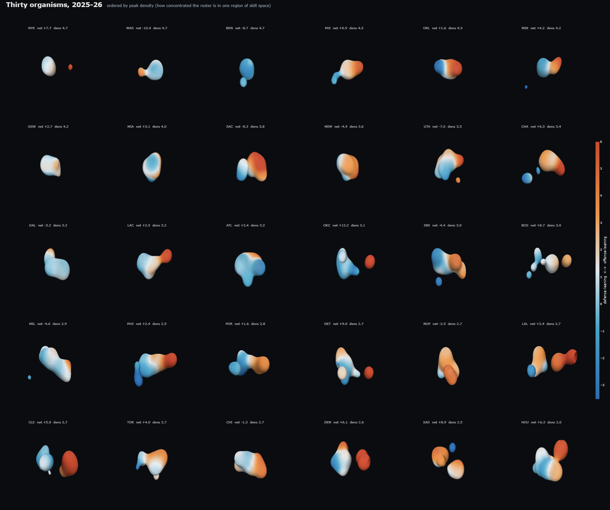
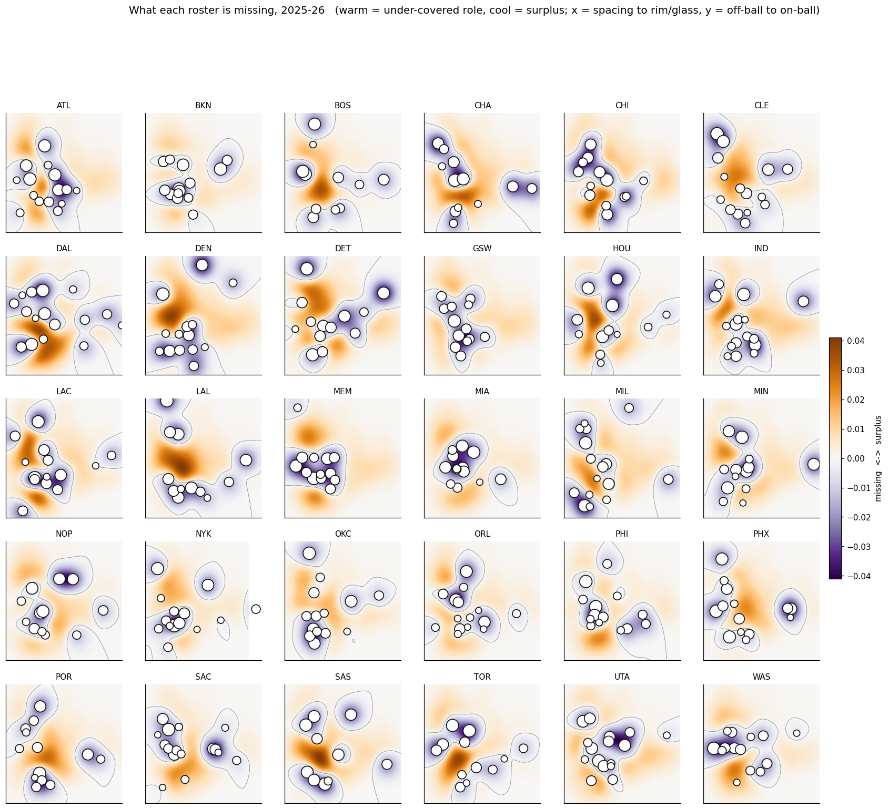
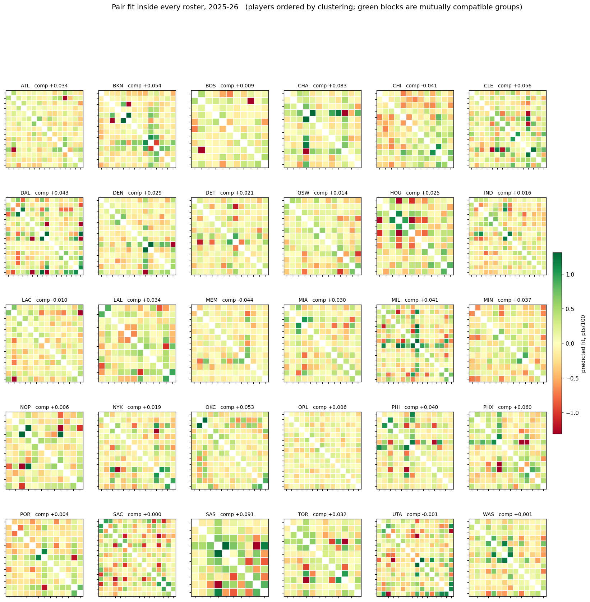
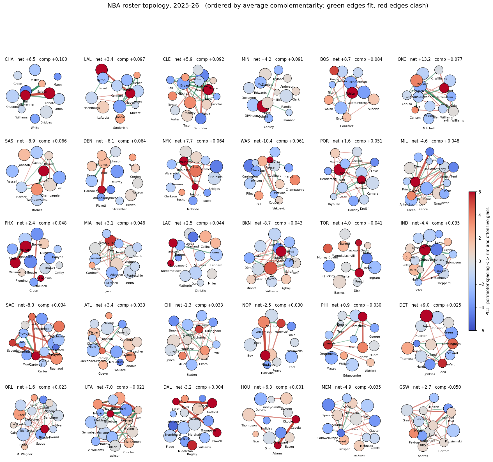
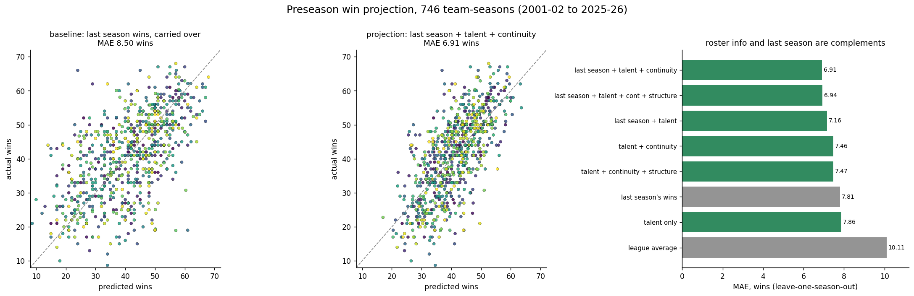
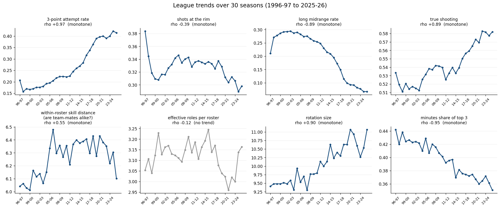

Every player-season is a point in a learned skill space. Weight each point by minutes and a roster becomes a shape: lobes where roles cluster, bulges where players duplicate each other, holes where the league spends minutes and this team does not.
Pick a 2025-26 roster, then switch between views of the same shape. 3D views are interactive: drag to rotate, scroll to zoom.
All 30 shapes side by side, and the skill space they live in.






How a shape deforms when the roster changes. Real transactions on the left half, single-player counterfactuals on the right.
Best, worst and highest-minute pairs, with the skill-space geometry behind each modelled fit.
Each shape statistic correlated against independently computed roster structure metrics, 210 team-seasons.
| Shape encoding | Redundancy | Complementarity | Fragility | Net rating |
|---|---|---|---|---|
| Peak density | +0.48 | -0.20 | -0.06 | -0.23 |
| Compactness | +0.38 | -0.27 | -0.16 | -0.27 |
| Lobe count | -0.32 | +0.10 | +0.14 | +0.25 |
| Volume | -0.26 | +0.11 | -0.04 | +0.02 |
| Largest-lobe share | +0.22 | -0.19 | -0.16 | -0.27 |
Redundancy reads well as peak density. Diversity reads as lobes, and lobes are the only encoding that likes good teams: a tidy sphere is a worse team. Complementarity is a property of pairs, which a smooth density throws away. Fragility did not survive measurement.